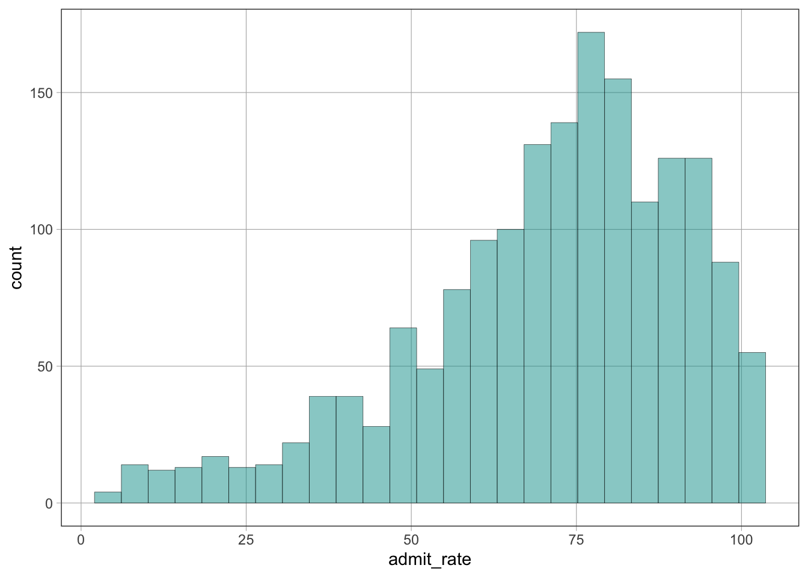
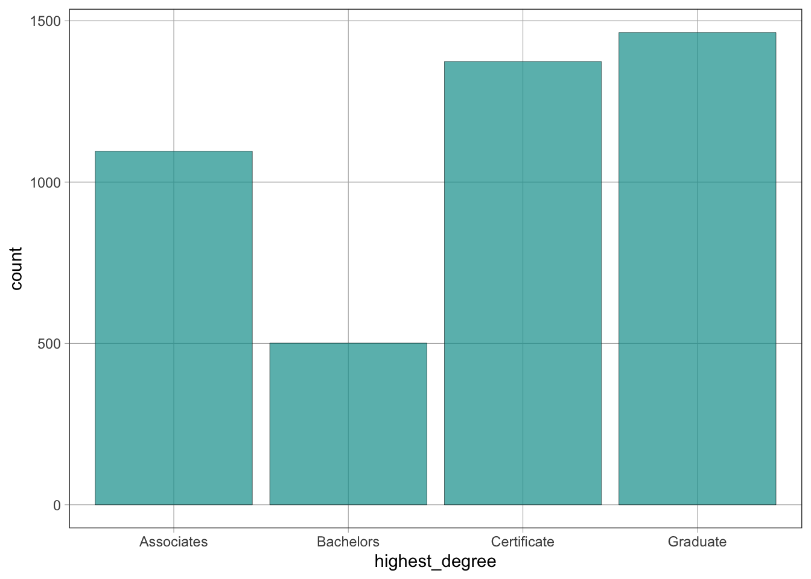
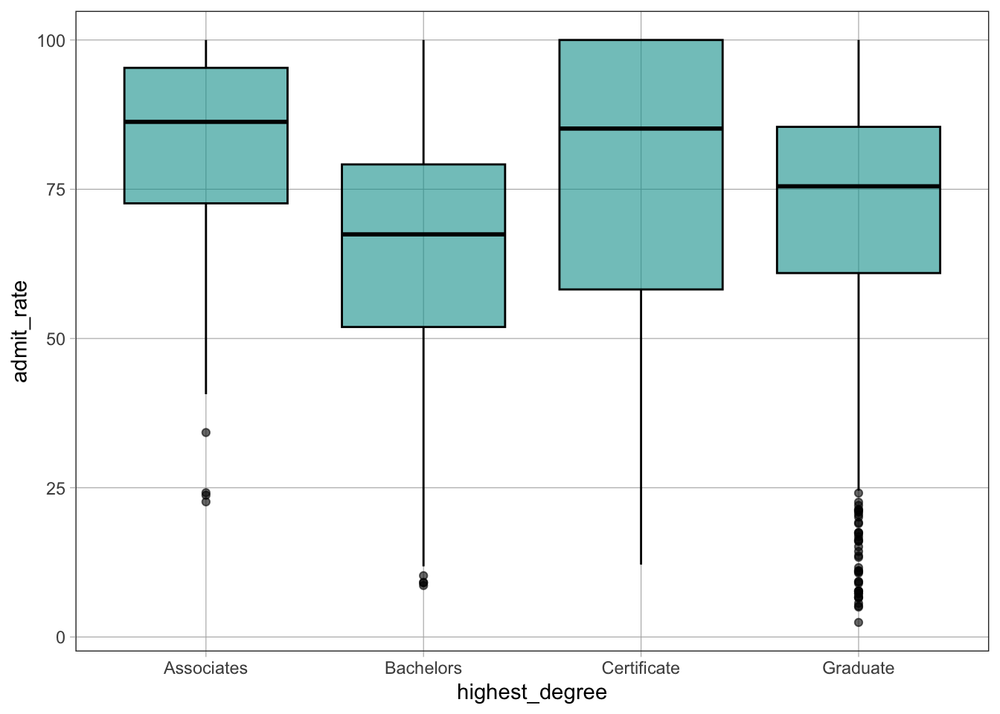
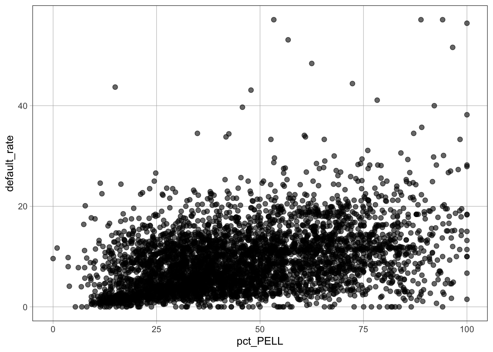
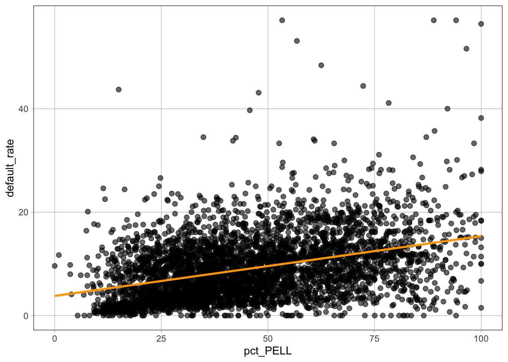

# Store value 10 in x
x <- 10
# Print out value of x
x[1] 10<-)The assignment operator <- is used to store a value in an object.
Syntax
object_name <- valueExample
# Store value 10 in x
x <- 10
# Print out value of x
x[1] 10head()The head() function displays the first 6 rows of a dataset.
Syntax
head(dataset_name)Example
head(dat) OPEID name city state region
1 100200 Alabama A & M University Normal AL South
2 105200 University of Alabama at Birmingham Birmingham AL South
3 2503400 Amridge University Montgomery AL South
4 105500 University of Alabama in Huntsville Huntsville AL South
5 100500 Alabama State University Montgomery AL South
6 105100 The University of Alabama Tuscaloosa AL South
median_debt default_rate highest_degree ownership locale hbcu
1 15.250 12.1 Graduate Public Small City Yes
2 15.085 4.8 Graduate Public Small City No
3 10.984 12.9 Graduate Private nonprofit Small City No
4 14.000 4.7 Graduate Public Small City No
5 17.500 12.8 Graduate Public Small City Yes
6 17.671 4.0 Graduate Public Small City No
admit_rate SAT_avg online_only enrollment net_price avg_cost net_tuition
1 89.65 959 No 5090 15.529 23.445 8.101
2 80.60 1245 No 13549 16.530 25.542 11.986
3 NA NA Yes 298 17.618 20.100 13.890
4 77.11 1300 No 7825 17.208 24.861 8.279
5 98.88 938 No 3603 19.534 21.892 9.302
6 80.39 1262 No 30610 20.917 30.016 14.705
ed_spending_per_student avg_faculty_salary pct_PELL pct_fed_loan grad_rate
1 4.836 7.599 70.95 75.04 28.66
2 14.691 11.380 33.97 46.88 61.17
3 3.664 4.545 74.52 84.93 25.00
4 8.320 9.697 24.03 38.55 57.14
5 9.579 7.194 73.68 78.05 31.77
6 9.650 10.349 17.18 36.44 72.14
pct_firstgen med_fam_income med_alum_earnings
1 36.58281 23.5530 36.339
2 34.12237 34.4890 46.990
3 51.25000 15.0335 37.895
4 31.01322 44.7870 54.361
5 34.34343 22.0805 32.084
6 22.57127 66.7335 52.751dim()The dim() function displays the dimensions (rows × columns) of a dataset.
Syntax
dim(dataset_name)Example
dim(dat)[1] 4435 26The first number is the number of rows (horizontal), and the second is the number of columns (vertical).
select()The select() function is used to select only certain variables (columns) from a dataset.
Syntax
new_data <- select(dataset_name, col1, col2, ...)Example
example_dat <- select(dat, name, median_debt, ownership, admit_rate, hbcu)subset()The subset() function filters a dataset to obtain certain observations (rows), based on conditions.
Syntax
subset(dataset_name, condition)Example
subset(example_dat, hbcu == "Yes" & admit_rate < 40) name median_debt
461 Delaware State University 18.264
473 Howard University 19.500
491 Florida Agricultural and Mechanical University 18.750
503 Florida Memorial University 17.155
1376 Alcorn State University 16.895
1401 Rust College 11.226
2747 Hampton University 18.500
ownership admit_rate hbcu
461 Public 39.34 Yes
473 Private nonprofit 38.64 Yes
491 Public 32.98 Yes
503 Private nonprofit 38.41 Yes
1376 Public 37.72 Yes
1401 Private nonprofit 29.47 Yes
2747 Private nonprofit 36.00 Yes| Operator | Meaning | Example. |
|---|---|---|
== |
Equals exactly | x == 10 |
!= |
Does not equal | x != 10 |
< |
Less than | x < 10 |
> |
Greater than | x > 10 |
<= |
Less than or equal to | x <= 10 |
>= |
Greater than or equal to | x >= 10 |
| |
Logical OR | x < 5 | x > 10 |
& |
Logical AND | x > 5 & x < 10 |
arrange()The arrange() function orders the rows in a dataset based on one or more variables.
Syntax
arrange(data_name, column_name)Example (ascending order)
arrange(example_dat, admit_rate) name median_debt ownership
1 Curtis Institute of Music 16.250 Private nonprofit
2 Harvard University 12.072 Private nonprofit
3 Stanford University 11.000 Private nonprofit
4 Princeton University 10.355 Private nonprofit
5 Yale University 12.000 Private nonprofit
6 Columbia University in the City of New York 19.250 Private nonprofit
admit_rate hbcu
1 2.44 No
2 5.01 No
3 5.19 No
4 5.63 No
5 6.53 No
6 6.66 Nodesc()The desc() function modifies arrange() to put data in descending order.
Syntax
arrange(dataset_name, desc(column_name))Example (descending order)
arrange(example_dat, desc(admit_rate)) name median_debt
1 University of Arkansas Community College-Morrilton 6.250
2 Design Institute of San Diego 31.000
3 Naropa University 16.390
4 VanderCook College of Music 27.000
5 Saint Elizabeth School of Nursing 20.291
6 Maharishi International University 13.085
ownership admit_rate hbcu
1 Public 100 No
2 Private for-profit 100 No
3 Private nonprofit 100 No
4 Private nonprofit 100 No
5 Private nonprofit 100 No
6 Private nonprofit 100 No$) operatorThe $ operator selects a single variable (column) from a dataset.
Syntax
dataset_name$column_nametable()The table() function displays frequency counts for the values of a categorical variable.
Syntax
table(dataset_name$column_name)Example
table(dat$highest_degree)
Associates Bachelors Certificate Graduate
1096 501 1374 1464 gf_histogram()The gf_histogram() function creates a histogram of a quantitative variable.
Syntax
gf_histogram(~variable_name, data = dataset_name)Example
gf_histogram(~admit_rate, data = dat)Warning: Removed 2731 rows containing non-finite outside the scale range
(`stat_bin()`).
gf_bar()The gf_bar() function creates a bar plot of a categorical variable.
Syntax
gf_bar(~variable_name, data = dataset_name)Example
gf_bar(~highest_degree, data = dat)
~) SymbolThe ~ symbol is often used to separate the outcome variable (\(y\)) and predictor variable (\(x\)) in graphs and models:
outcome ~ predictorgf_boxplot()The gf_boxplot() function creates boxplots.
Syntax
gf_boxplot(outcome ~ predictor, data = dataset_name)Example
gf_boxplot(admit_rate ~ highest_degree, data = dat)Warning: Removed 2731 rows containing non-finite outside the scale range
(`stat_boxplot()`).
admit_rate ~ highest_degree means that admit_rate is the outcome (\(y\)) variable and highest_degree is the predictor (\(x\)) variable.admit_rate on the \(y-\)axis and highest_degree on the \(x-\)axis.~) SymbolThe ~ symbol is used to separate the outcome (\(y\)) variable and the predictor (\(x\)) variable in graphs and models.
Syntax
outcome ~ predictorExample
default_rate ~ pct_PELLdefault_rate ~ pct_PELLIn this example, default_rate is the outcome (\(y\)) variable and pct_PELL is the predictor (\(x\)) variable.
gf_point()The gf_point() function creates a scatterplot.
Syntax
gf_point(outcome ~ predictor, data = dataset_name)Example
gf_point(default_rate ~ pct_PELL, data = dat)
default_rate ~ pct_PELL specifies default rate on the \(y\)-axis and percent PELL on the \(x\)-axisdata = dat tells the function which dataset to use%>%) Pipe OperatorThe %>% operator pipes the result of one command into the next command. It is often used to layer models on top of graphs.
Syntax
command_1 %>% command_2Example
gf_point(default_rate ~ pct_PELL, data = dat) %>%
gf_lm(color = "orange")
gf_lm()The gf_lm() function plots a linear model on an existing graph.
Syntax
gf_lm(color = "color_name")Example
gf_point(default_rate ~ pct_PELL, data = dat) %>%
gf_lm(color = "orange")
color = "orange" sets the color of the fitted linelm()The lm() function fits a linear regression model.
Syntax
model_name <- lm(outcome ~ predictor, data = dataset_name)Example
PELL_model <- lm(default_rate ~ pct_PELL, data = dat)
PELL_model
Call:
lm(formula = default_rate ~ pct_PELL, data = dat)
Coefficients:
(Intercept) pct_PELL
3.7989 0.1155 default_rate ~ pct_PELL specifies the outcome and predictordata = dat indicates the dataset usedPELL_model <- stores the model in an object named PELL_modelsummary()The summary() function displays detailed information about a fitted regression model.
Syntax
summary(model_name)Example
summary(PELL_model)
Call:
lm(formula = default_rate ~ pct_PELL, data = dat)
Residuals:
Min 1Q Median 3Q Max
-14.669 -3.914 -0.974 3.113 47.142
Coefficients:
Estimate Std. Error t value Pr(>|t|)
(Intercept) 3.7989 0.2095 18.14 <2e-16 ***
pct_PELL 0.1155 0.0042 27.50 <2e-16 ***
---
Signif. codes: 0 '***' 0.001 '**' 0.01 '*' 0.05 '.' 0.1 ' ' 1
Residual standard error: 5.68 on 4433 degrees of freedom
Multiple R-squared: 0.1457, Adjusted R-squared: 0.1455
F-statistic: 756.2 on 1 and 4433 DF, p-value: < 2.2e-16lm()The lm() function can be used to fit a multiple regression model, where one outcome (\(y\)) variable is predicted using two or more predictors (\(x_1, x_2, x_3, \ldots\)).
Syntax
model_name <- lm(y ~ x1 + x2 + x3 + ..., data = dataset_name)Example
tuition_grad_model <- lm(default_rate ~ net_tuition + grad_rate, data = dat)
tuition_grad_model
Call:
lm(formula = default_rate ~ net_tuition + grad_rate, data = dat)
Coefficients:
(Intercept) net_tuition grad_rate
13.04211 -0.18993 -0.03501 default_rate is the outcome (\(y\)) variablenet_tuition and grad_rate are predictor variables+ symbol adds predictors to the modeldata = dat tells R which dataset to usetuition_grad_model <- stores the model in an object named tuition_grad_modelRunning tuition_grad_model prints the estimated coefficients of the regression model.
summary()The summary() function displays detailed information about a multiple regression model.
Syntax
summary(model_name)Example
summary(tuition_grad_model)
Call:
lm(formula = default_rate ~ net_tuition + grad_rate, data = dat)
Residuals:
Min 1Q Median 3Q Max
-12.188 -4.049 -1.336 2.751 49.669
Coefficients:
Estimate Std. Error t value Pr(>|t|)
(Intercept) 13.042108 0.238579 54.666 < 2e-16 ***
net_tuition -0.189926 0.012953 -14.663 < 2e-16 ***
grad_rate -0.035014 0.004409 -7.941 2.52e-15 ***
---
Signif. codes: 0 '***' 0.001 '**' 0.01 '*' 0.05 '.' 0.1 ' ' 1
Residual standard error: 5.848 on 4432 degrees of freedom
Multiple R-squared: 0.09465, Adjusted R-squared: 0.09424
F-statistic: 231.7 on 2 and 4432 DF, p-value: < 2.2e-16poly()The poly() function adds polynomial terms to a regression model.
Syntax
poly(variable_name, degree)Example
sat_model_2 <- lm(default_rate ~ poly(SAT_avg, 2), data = sample_dat)
sat_model_2
Call:
lm(formula = default_rate ~ poly(SAT_avg, 2), data = sample_dat)
Coefficients:
(Intercept) poly(SAT_avg, 2)1 poly(SAT_avg, 2)2
4.065 -8.391 4.355 default_rate is the outcome (\(y\)) variableSAT_avg is the predictor (\(x\)) variablepoly(SAT_avg, 2) adds two polynomial terms: \(x\) and \(x^2\)data = sample_dat specifies the dataset usedsat_model_2 <- stores the fitted model in an object named sat_model_2Running sat_model_2 prints the estimated coefficients of the polynomial regression model.
predict()The predict() function generates predictions from a previously fitted model using new data.
Syntax
predict(model_name, newdata = dataset_name)Example
predict(sat_model_2, newdata = test)sat_model_2 is a previously fitted modelnewdata = test specifies the dataset on which predictions are made